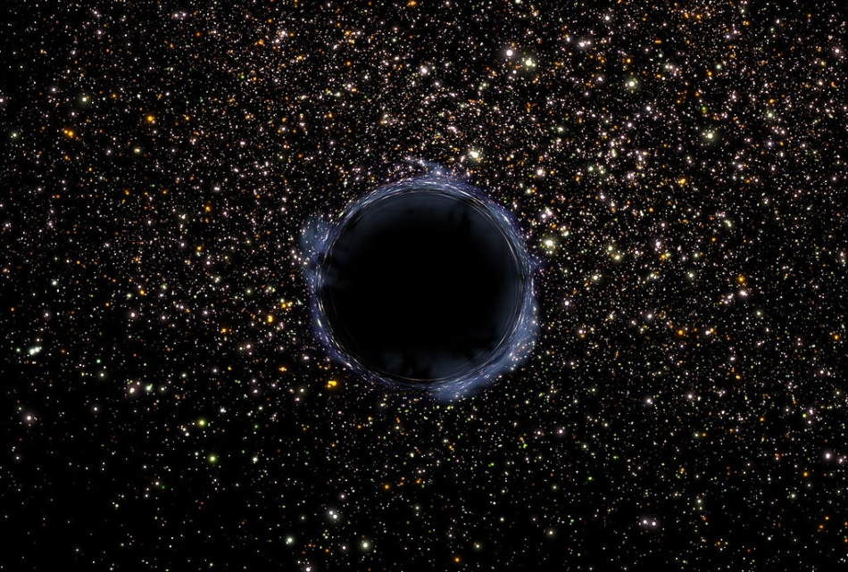
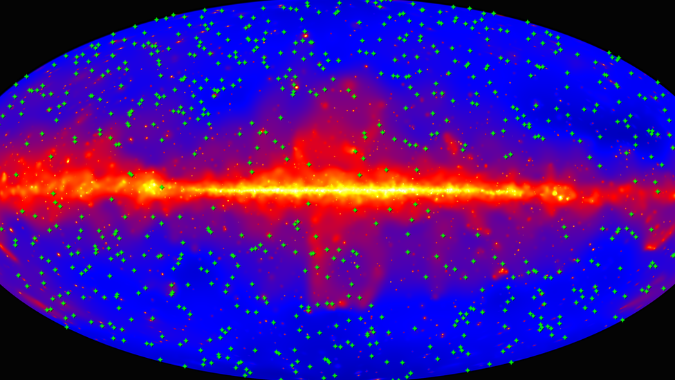

Energía Oscura
La energía del espacio
La energía oscura es el término que los astrónomos usan para referirse a la causa desconocida de la expansión acelerada del universo. Aunque algunas teorías sugieren que actúa como una presión negativa que expande el espacio, no se sabe con certeza si ejerce alguna fuerza. Existen varias hipótesis sobre su naturaleza, incluyendo cuatro explicaciones principales, aunque podría tratarse de algo completamente distinto.

La energía del vacío
Una posible explicación para la energía oscura es la energía del vacío, una energía fundamental presente en el espacio, que podría estar relacionada con la constante cosmológica de Einstein. Originalmente, Einstein la introdujo para equilibrar la gravedad y mantener un universo estático, pero la descartó tras descubrirse la expansión del universo. Sin embargo, cuando se confirmó que la expansión es acelerada, algunos científicos sugirieron que la constante cosmológica podría tener un valor distinto de cero y estar asociada a la energía del vacío. Según la teoría cuántica de campos, el espacio nunca está completamente vacío, ya que existen partículas virtuales que aparecen y desaparecen, impulsadas por esta energía, lo que podría explicar la expansión cósmica. No obstante, los cálculos predicen que la energía del vacío debería ser tan intensa que impediría la formación de estrellas y galaxias. Como el universo claramente existe, esto indica que la cantidad real de energía del vacío es mucho menor de lo esperado, un enigma conocido como “el problema de la constante cosmológica”, aún sin resolver.
La Quintaescencia
Otra posible explicación para la energía oscura es la quintaesencia, un hipotético fluido o campo de energía que llena el espacio y se comporta de manera opuesta a la materia normal, variando en cantidad y distribución a lo largo del tiempo y el espacio. Algunos científicos han propuesto que la quintaesencia podría ser una combinación de energía oscura y materia oscura, aunque actualmente se consideran fenómenos distintos. Mientras que ambas siguen siendo misterios, se estima que la materia oscura representa aproximadamente el 85% de toda la materia del universo.
Un defecto en la relatividad general
Otra teoría sugiere que la energía oscura no es una entidad física, sino un indicio de que nuestra comprensión de la gravedad y la relatividad general es incompleta. Algunos científicos creen que modificando la teoría de Einstein, podríamos explicar la expansión acelerada del universo sin necesidad de recurrir a la energía oscura. Una posible alternativa es la gravedad unimodular, una versión modificada de la relatividad general que Einstein propuso en 1919, la cual podría describir el universo sin requerir la existencia de energía oscura.

La energía oscura sigue siendo uno de los mayores misterios del universo, pero por primera vez contamos con herramientas avanzadas para investigarla. Varios proyectos están en marcha para explorar su naturaleza:
Misión Euclid (ESA, 2023): Creará un mapa 3D del universo para estudiar la influencia de la energía oscura en la evolución de la materia. Telescopio Nancy Grace Roman (NASA, 2027): Observará la energía oscura y la materia oscura con una resolución similar al Hubble, pero con un campo de visión 100 veces mayor. Observatorio Vera C. Rubin (Chile, 2025): Apoyará la investigación de la energía oscura desde la Tierra. Telescopio James Webb (NASA, 2021): Contribuirá a diversos estudios, incluida la energía oscura. Misión SPHEREx (NASA, 2025): Mapeará el cielo en el infrarrojo cercano, analizando más de 450 millones de galaxias para entender el origen del universo y la energía oscura.
Además, la NASA impulsa el proyecto de ciencia ciudadana Exploradores de la Energía Oscura, permitiendo a cualquier persona colaborar en esta investigación. Estos esfuerzos combinados podrían marcar una nueva era en la cosmología.